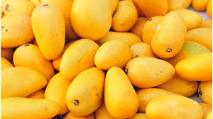
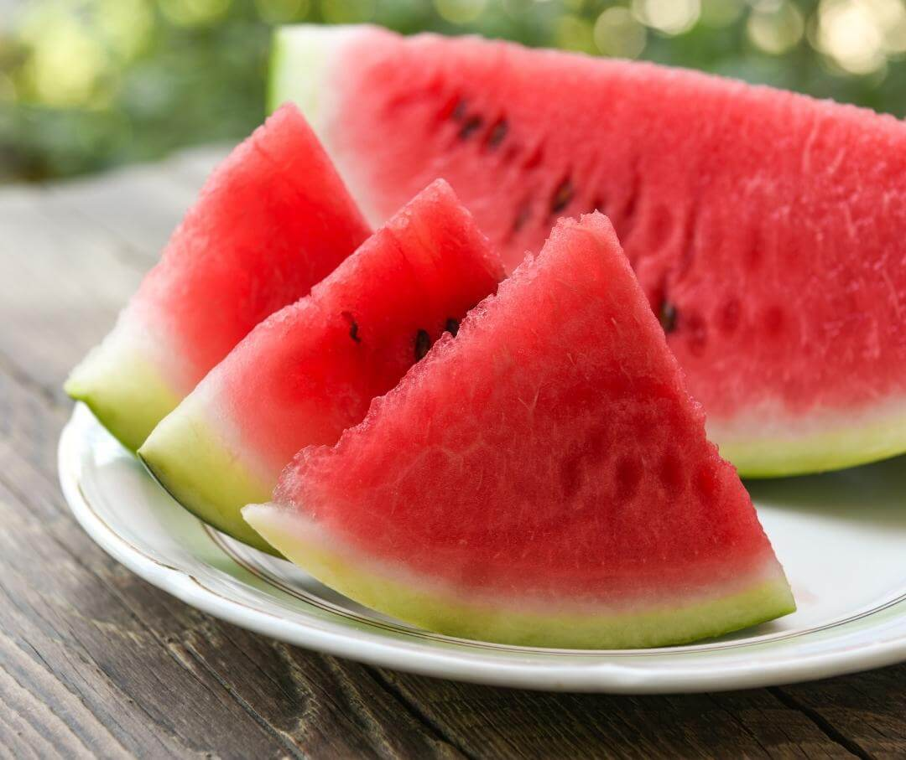
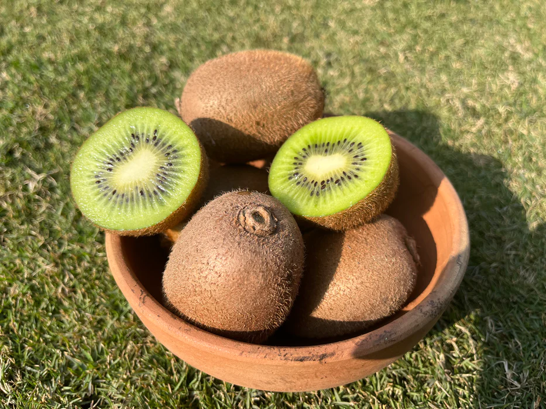
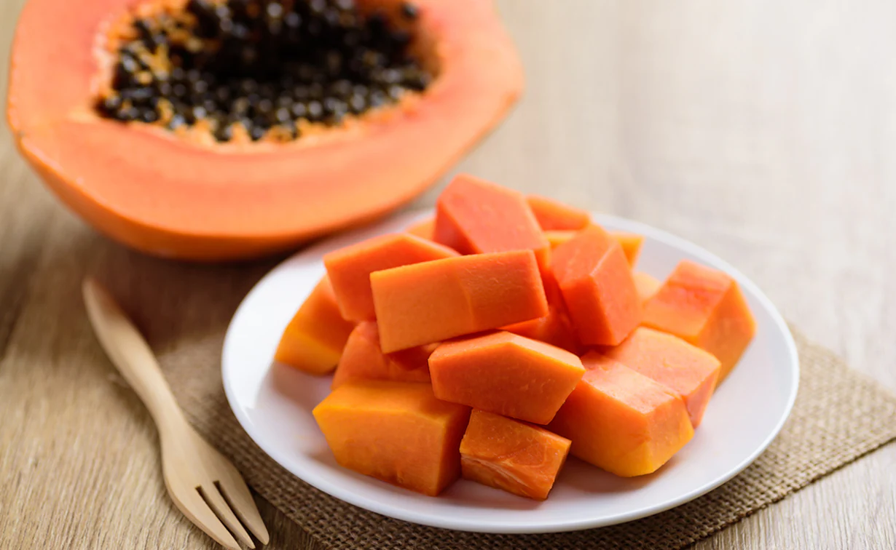
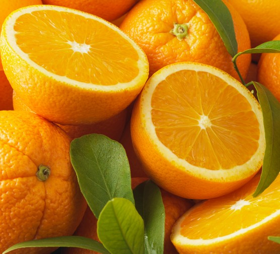

Mango recipes that you don't want to miss:
- Mango pulp smoothie
- Mango panna drink with jeera topping
- Fluffy mango mousse
- Mango-yoghurt punch
- Chocolate mango smoothe

With 92% per cent water content.It is one of the best summer fruits.
- anti-inflammatory (reduces pain, swelling and redness in the body)
- anticancer (prevents cancer)
- antioxidant (reduces cell damage and prevents premature ageing)

Kiwi is one of the all-rounder fruits benefits such as good digestion, better sleep, and deperession alleviation.
- Kiwi mango fuzz: combined power of two best summer fruits to keep yourself energised and hydrated this summer.
- Kiwi smoothie with added melon: Tasty.,energising, and hydrating nutratious drink to have this summer.

Papayya is one of the best summer fruits because of its enzyme content.
- It reliefs (Papain and Chymopapain).
- The strengthens immunity fight viral, bacterial, and fungal infections
.Peel of the Papayya skin,cut into thin slices and enjoy with a pinch of black salt

Orange are also summer fruits with more than 80% per cent of water content.
- Rich in vitamins and minerals, oranges keep your body hydrated and protect it from the summer heat.
- Orange juice is considered the easiest and best way to enjoy this summer fruit.
